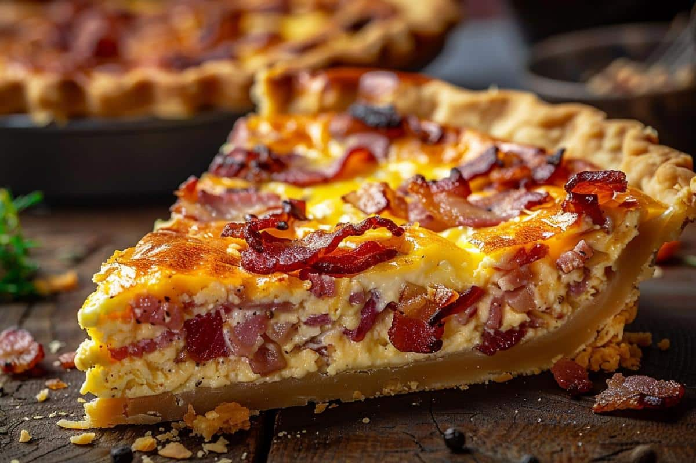

Quiche lorraine

This classic French quiche Lorraine recipe is the perfect addition to any breakfast, brunch, lunch, or dinner table.
Ingredients:
- Bacon: This crowd–pleasing recipe starts with 12 slices of bacon.
- Cheese: A cup of shredded Swiss cheese lends creaminess and flavor.
- Onion: Minced onion adds flavor and texture.
- Pie crust: Use a store-bought pastry crust or make your own at home.
- Cream: Two cups of light cream adds moisture and helps create the perfect texture.
- Eggs: Of course, you’ll need eggs! Four large beaten eggs, to be exact.
- Salt: Salt enhances the flavors of the other ingredients.
- Sugar: A pinch of sugar adds subtle sweetness.
- Cayenne: Subtly spice things up with a pinch of cayenne pepper.
Steps:
- Cook, chop, and drain the bacon.
- Sprinkle the bacon, cheese, and onion in the shell.
- Mix the wet ingredients and seasonings, then pour the mixture into the shell.
- Bake until a knife comes out clean.